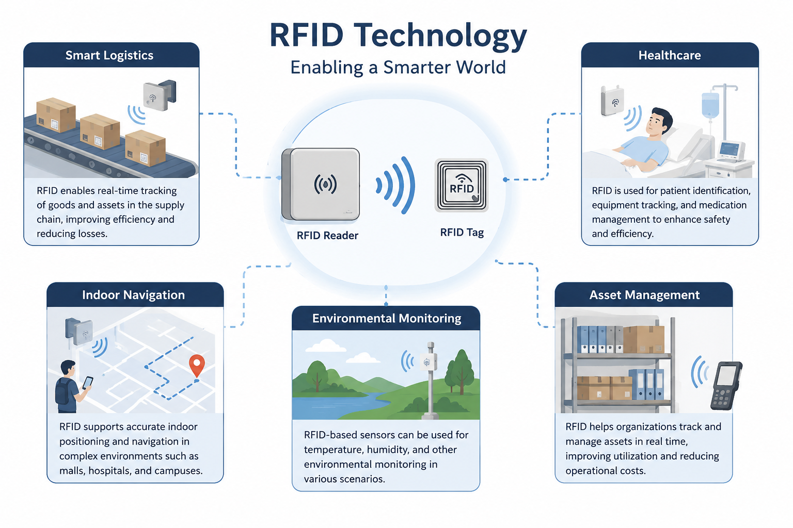
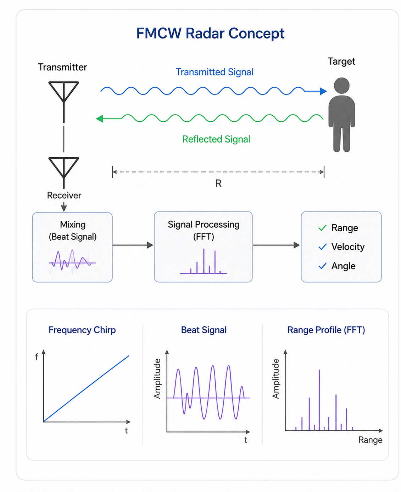

Research

Area 1: RFID Sensing and Applications
RFID is a low-cost and contactless wireless technology that can support sensing, identification, and localization in daily environments.
Our research focuses on RFID-based sensor design, indoor localization, environmental monitoring, smart logistics, healthcare support, and indoor navigation. By analyzing RFID signal features such as RSSI, phase, and tag response patterns, we aim to develop practical sensing systems for an IoT-enabled society.
Methods: Machine learning, statistical modeling, signal analysis, experimental evaluation, and sensing system development.
Ongoing topics: RFID sensor design, RFID-based localization, and RFID applications for smart environments.

Area 2: FMCW Radar Sensing
FMCW radar is a sensing technology that can measure distance, velocity, and angle by transmitting frequency-modulated continuous waves. It can operate in low-light, smoky, or visually challenging environments, making it suitable for smart monitoring and environmental perception.
Our research focuses on FMCW radar signal processing, point cloud analysis, reflection modeling, and indoor structure estimation. We aim to develop radar-based sensing systems for human monitoring, room structure recognition.
Methods: Range-Doppler analysis, angle estimation, point cloud processing, reflection path modeling, machine learning, experimental evaluation, and system development.
Ongoing topics: Indoor environment recognition, reflection path reconstruction, human activity monitoring, and radar-based smart sensing.